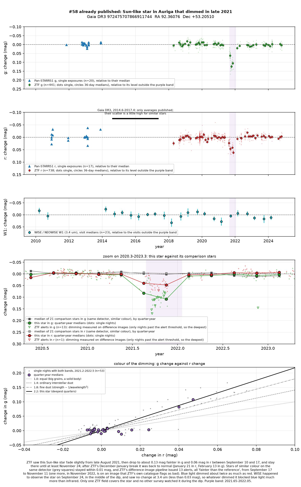
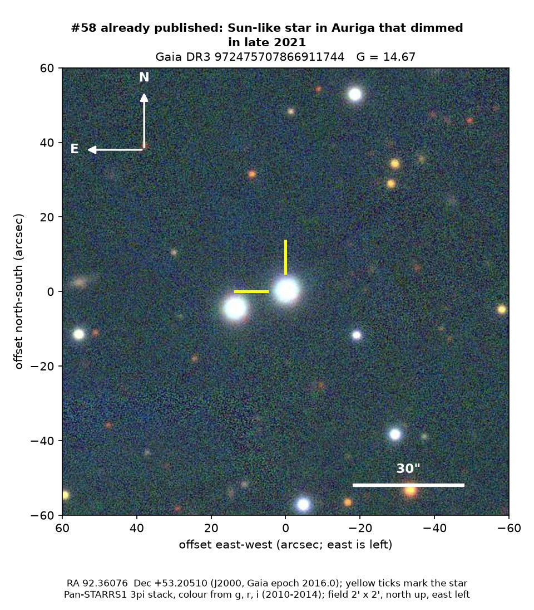
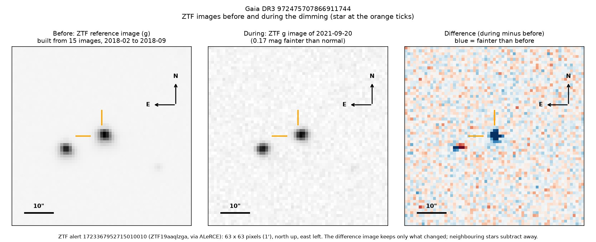

Professor of Mathematics
Paata Ivanisvili
Department of Mathematics, University of California, Irvine

Candidate 58: a Sun-like star that dimmed for three months, already published
Why it is listed. This dip is not new. Tzanidakis et al. (2025, arXiv:2508.03964) include the star among 81 main-sequence stars with dips found in ZTF data and show the same late-2021 dip, so it carries no estimate. The checks on this page were made independently and agree with the paper that the dip is real.
How to read the pictures. The finder chart shows a patch of sky two arcminutes across, about a fifteenth of the Moon’s width, with north up and east to the left. The star sits between the two yellow ticks, and the white bar is 30 arcseconds long. On a light curve the vertical axis is magnitude, a brightness scale on which larger numbers mean fainter stars, and it is drawn so that down means fainter. Purple shading marks the dimming. Each survey uses slightly different filters, so each is compared with its own normal level. The ZTF pictures show ZTF’s reference image of the star, an image taken during the dimming, and the difference between the two, in which only what changed remains: blue means fainter and red brighter.

What changed. The star is very like the Sun, about 5,900 K, 1.04 times the Sun’s mass and about 4.6 billion years old, some 860 parsecs away in Auriga. ZTF saw it steady until August 2021. Between 10 and 17 September 2021 it dropped to 0.17 magnitudes fainter in green light, 14 per cent of it, and 0.06 in red light, and it stayed faint until at least late November. ZTF took no data from early December to mid-January; when it looked again, the star was back to normal. Of 56 stars of similar colour on the same detector, none changed by more than 0.014 magnitudes, and ZTF’s alert system flagged the star 13 times.
Why it might matter. Blue light dimmed about 2.2 times as much as red light. By luck, NEOWISE observed the star on 24 September 2021, in the middle of the dip, and found it exactly as bright at 3.4 microns as on its 22 other visits. A solid body or large dust grains would have dimmed the infrared too, by about 0.06 magnitudes, so they are ruled out, and the steep colour fits very fine dust crossing the line of sight.
Apart from the paper above, the dip is not in SIMBAD, VSX (the variable-star index), Gaia’s variable-star lists or the other catalogues consulted. The paper gives the star’s position only in a figure, which is why catalogue look-ups do not find it.
- Star
- Gaia DR3 972475707866911744, a Sun-like star
- Location
- RA 92.36076°, Dec +53.20510° (J2000), in Auriga, 16 degrees above the Milky Way’s mid-plane
- Distance
- about 860 parsecs (2,800 light-years)
- Brightness
- Gaia G = 14.7, far too faint for the eye
- Probability
- This star’s dip has already been published by Tzanidakis et al. (2025), so it is not a new discovery and carries no estimate. It is listed because the checks on this page were made independently. See the introduction to all fifty-eight candidates.
- Caveat
- The dip has already been published. Only one ZTF field covers the star, and no other survey watched it during the dip. A star of similar brightness 15 arcseconds away, unrelated to it, stayed steady on the same images.

